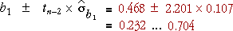

Confidence interval for the slope
When the least squares slope, b1, is used to estimate β1, the error has a normal distribution,
error in estimate of β1 = (b1 − β1) ~ normal ( 0, σb1 )
This suggests a 95% confidence interval of the form

In practice, we must replace σ in the formula for the standard error with an estimate (based on the sum of squared residuals),

so the constant 1.96 must be replaced by a larger value from the t distribution with (n - 2) degrees of freedom.
A 95% confidence interval for the slope is

Most statistical software will evaluate b1 and its standard error for you when you fit a normal linear model, so it is fairly easy to evaluate the confidence interval in practice — you will not need to use any of the formulae above!
Example
For the example on the previous page, the least squares estimate of the slope and its standard error were:
b1 = 0.468, se (b1) = 0.107
Since there were n = 13 data points, tn − 2 = t11 = 2.201, so a 95% confidence interval for the slope is

We are 95% confident that tourism is increasing at a rate of between 232,000 and 704,000 per year.